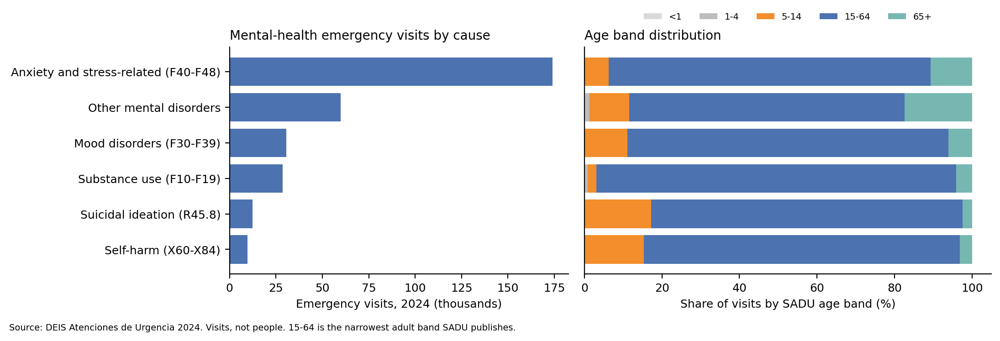
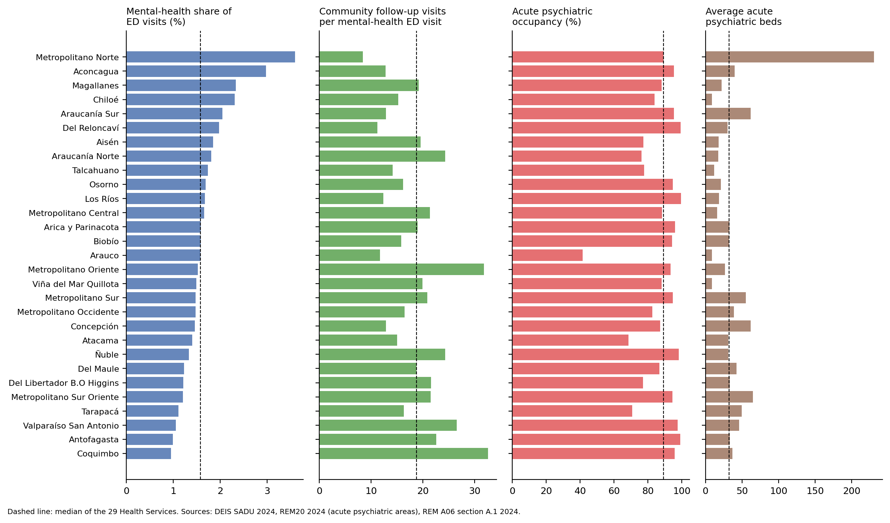
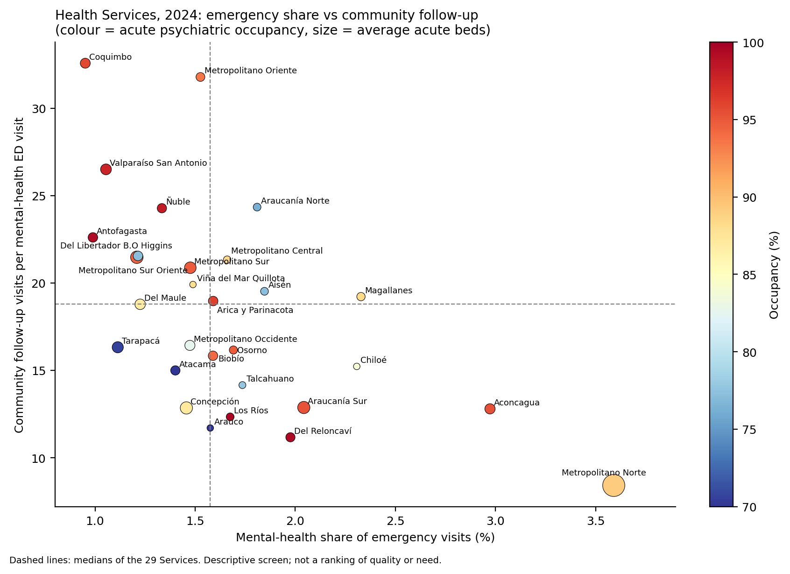

Main question. In 2024, how did the 29 Health Services differ in mental-health emergency visits, community follow-up and acute psychiatric bed use, and which area deserves a closer look in each?
Proposed user. Mental-health unit of a Health Service; MINSAL network division.
Decision. Review first: (a) community follow-up, (b) acute bed capacity, (c) organisation of emergency and referral care.
Scope. Public network, 2024, visits and bed-days, not people.
From W1 to C1
| W1 | C1, after feedback |
|---|---|
| Stress ratio: visits / bed-days | Visits, bed-days and occupancy shown separately |
| Law 21.331 as a mandate being breached | Law and ENS 2030 as context only |
| "15% target", "2.4% budget" | Removed: not in the sources |
| Emergency vs beds | + community follow-up (REM A06) |
| 640 vs 609 facilities | Resolved: 609 legacy + 31 modern codes |
| Pathway stage | Source | One row = | Observed in 2024 |
|---|---|---|---|
| Community care | REM A06 section A.1 | facility × month × professional | Yes: 5.3 M follow-up visits |
| Emergency visit | SADU causes 36, 35 | facility × day × cause | Yes: 305,431 + 9,753 visits |
| Decision to hospitalise | SADU cause 42 | facility × day | Yes: 27,306, hospital EDs only |
| Waiting for a bed | SADU causes 27, 28 | facility × day | No: zero on every facility-day |
| Acute psychiatric stay | REM20, 4 acute areas | hospital × area × month | Yes: 1,130 beds, 89.3% occupied |
No patient identifier: sources are aggregated to Health Service × 2024 and compared side by side, not joined row by row.
Facility join SADU → registry: 640/640 facilities, N:1, no duplication. Same 29 Health Service codes in all sources; names differ (e.g. "Iquique" = "Tarapacá").


Follow-up per ED visit: 8.4 to 32.6 (median 18.8).
Occupancy: 41.5% to 99.6%.
Concentration. The Horwitz Institute has 55% of Metropolitano Norte's mental-health visits; Philippe Pinel has 61% of Aconcagua's. Without them the shares fall from 3.6% to 1.7% and from 3.0% to 1.2%, so the high shares reflect referral centres, not local need.
Check before reading as care: Araucanía Norte 0.7 ED hospitalisations per 100 (median 21.1); Arauco 41.5% occupancy.

Flags: emergency share above the median (without psychiatric EDs), follow-up below the median, occupancy ≥ 90%.
| Flags | Services |
|---|---|
| 3 | Biobío, Araucanía Sur, Los Ríos, Osorno, Del Reloncaví |
| 2 | Arica y Parinacota, Aconcagua, Metropolitano Norte, Talcahuano, Arauco, Chiloé |
| 0 | Viña del Mar Quillota, O'Higgins, Del Maule |
Occupancy flag: 20 Services at 85%, 14 at 90%, 9 at 95%. A descriptive screen, not a ranking of quality or need.
Observed. Several-fold differences in follow-up and occupancy. Five Services combine a high emergency share, low follow-up and full beds.
Interpretation. For those five, review community follow-up first, then bed management.
Hypotheses. Low follow-up leads to more crises reaching the ED; long stays keep occupancy high.
Alternatives. Recording practice; referrals between Services; private sector; population size and age.
Cannot establish: need, quality, waiting time, causality, or whether a person was followed up after an ED visit.
W1 reconciled. Del Maule 1.83 reproduces, but is 1.17 with acute beds. "18 Services without child beds" is reversed: 18 have child short-stay beds; 7 report no acute child area (not reported ≠ no service).
Needed next: linked ED-admission records, a population denominator, 2021–2023 data, confirmation of anomalies.
ML: clustering Health Service profiles
Dashboard
Feedback response. 9 of 10 items accepted, 1 adapted: the DEIS 2024 establishment list could not be downloaded from our environment, so the 2026 registry was used and the gap stated.
AI use. W1: Gemini (scaffolding, translation). C1: Claude (extraction, notebook, drafting). Unsupported W1 claims removed after source checks. Every number comes from the executed notebook, and Service totals reconcile with national totals.
Contributions
| Member | Contribution |
|---|---|
| Benjamín Buzeta | [TO COMPLETE] |
| Oscar Pichuman Millape | [TO COMPLETE] |